Les supports disponibles
Choisissez un support. Dans chaque schéma, cliquez sur un élément pour afficher son explication.
Les instruments
Comprendre comment sont faits les jumelles, les télescopes et les lunettes, et le trajet de la lumière jusqu'à l'œil.
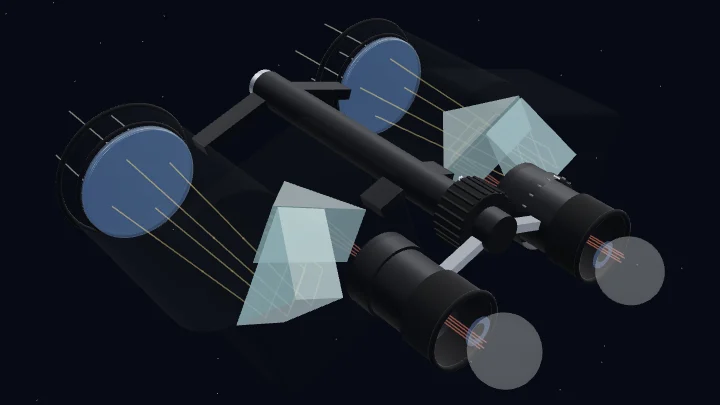
Instruments · JumellesJumelles
Cinq jumelles courantes en 3D, du 7×50 au 25×100 : prismes de Porro ou en toit, pupille de sortie, et tous les réglages pas à pas, avec ce que voit chaque œil.
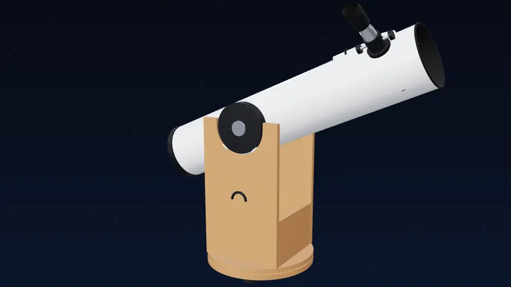
Instruments · MontureDobson et monture azimutale
Un Dobson 200/1200 en 3D : la caisse et ses deux axes, le pointage à la main, les vitesses à donner aux axes pour suivre, et l'image qui tourne dans l'oculaire.
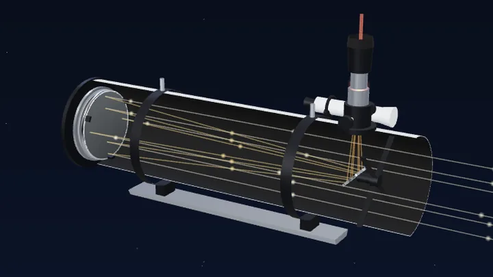
Instruments · OptiqueTélescope de Newton
Vue éclatée des pièces d'un 200/1000 et trajet animé de la lumière, du miroir primaire jusqu'à l'œil.
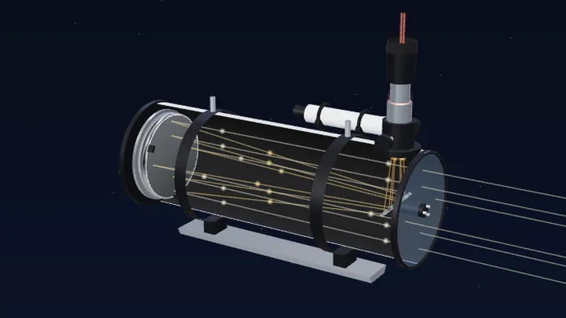
Instruments · OptiqueTélescope Schmidt-Newton
Un Newton 200/800 fermé par une lame de Schmidt : miroir sphérique, secondaire sans araignée, et l'étoile vue à l'oculaire avec ou sans la lame.
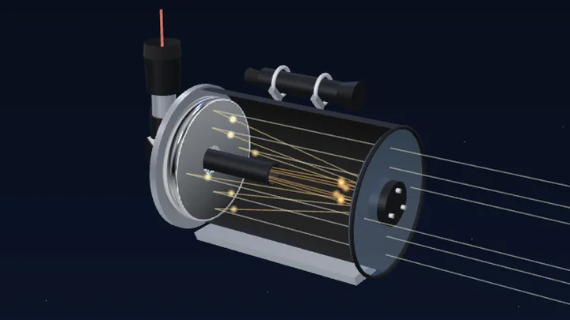
Instruments · OptiqueTélescope Schmidt-Cassegrain
Un C8 en 3D : la lumière repliée dans un tube court, la mise au point par le miroir primaire mobile et l'étoile vue à l'oculaire, nette ou défocalisée.
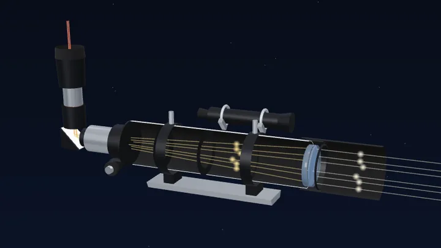
Instruments · OptiqueLunette astronomique
Quatre lunettes courantes en 3D, de la 72/420 ED à la 130/910 apo : objectif à 2 ou 3 lentilles, trajet de la lumière et longueur du tube qui suit la focale.
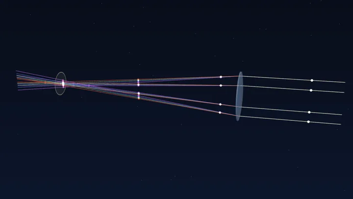
Optique · LunettesChromatisme des objectifs
Pourquoi chaque couleur a son foyer : lentille simple, achromatique, ED et apochromatique comparés, avec le halo violet vu sur une étoile et au bord de la Lune.
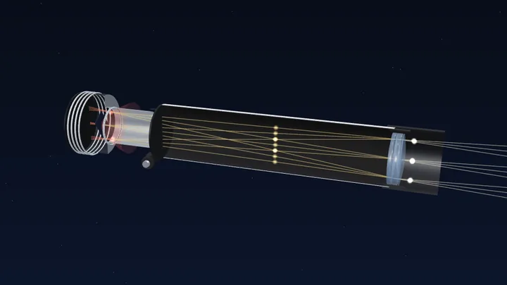
Instruments · AstrophotoLunette astrographe
Pourquoi les étoiles des coins sont déformées : courbure de champ, aplanisseur, réducteur ×0,8 et formule Petzval, avec le tirage à respecter et les étoiles vues sur la photo.
Utiliser son instrument
Monter, régler et pointer : les gestes qui font la différence sur le terrain.
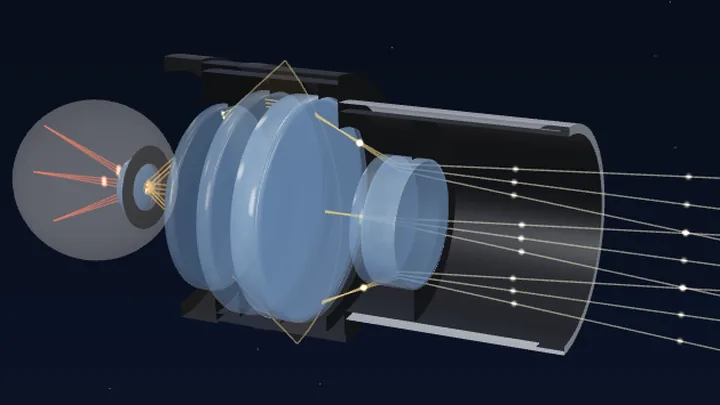
Optique · OculairesOculaires
Huygens, Plössl et Nagler en coupe sur un Newton 200/1000 : trajet de la lumière, champ apparent, pupille de sortie et place de l'œil.
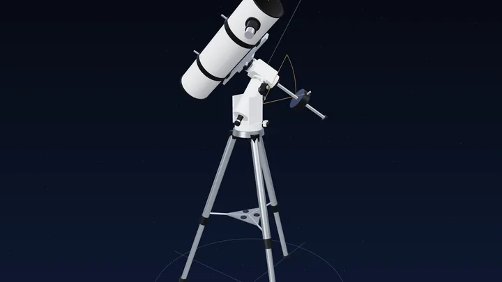
Instruments · MontureMonture équatoriale
Une EQ5 en 3D : les deux axes, le suivi du ciel, la rotation de champ comparée à une azimutale et la mise en station au viseur polaire.
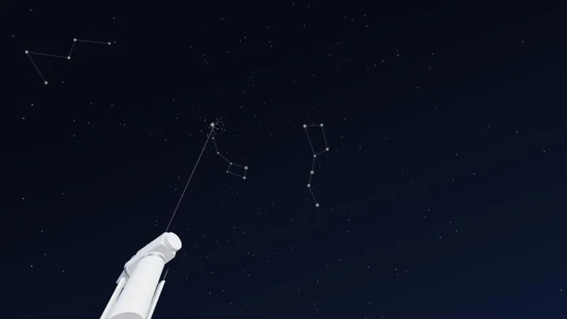
Instruments · RéglageMise en station
Au viseur polaire d'une EQ5 : placer la Polaire selon l'heure, régler les vis d'azimut et de latitude, et voir la dérive d'une étoile en pose longue.
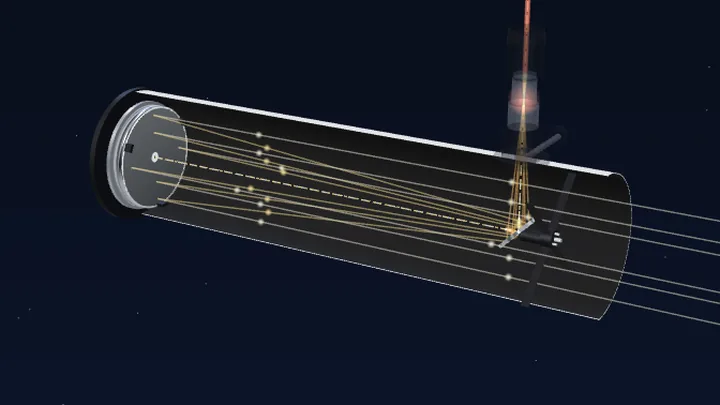
Instruments · RéglageCollimation d'un Newton
Déréglez les miroirs d'un 200/1000 et voyez l'effet sur une étoile, puis apprenez à les réaligner au Cheshire et au collimateur laser.
Astrophotographie
Préparer et traiter ses photos : choisir l'instrument et le capteur, obtenir des étoiles fines jusque dans les coins, puis calibrer et empiler les poses.
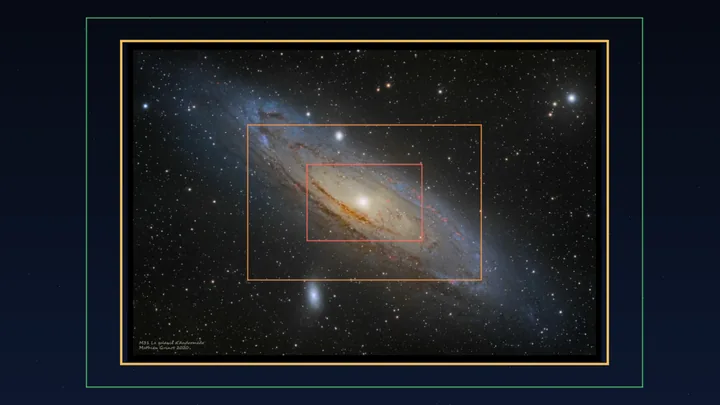
Astrophoto · CadrageChamp de vision
Ce que chaque instrument cadre sur M31, M42, les Pléiades et d'autres objets photographiés par le club, selon la focale, le capteur ou l'oculaire.
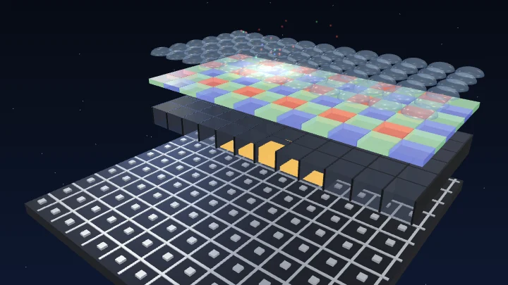
Astrophoto · CapteurCapteur et pixel
Du photon au fichier brut : microlentilles, matrice de Bayer, photodiodes et lecture. Et combien de ciel couvre chaque pixel selon l'instrument et la turbulence.
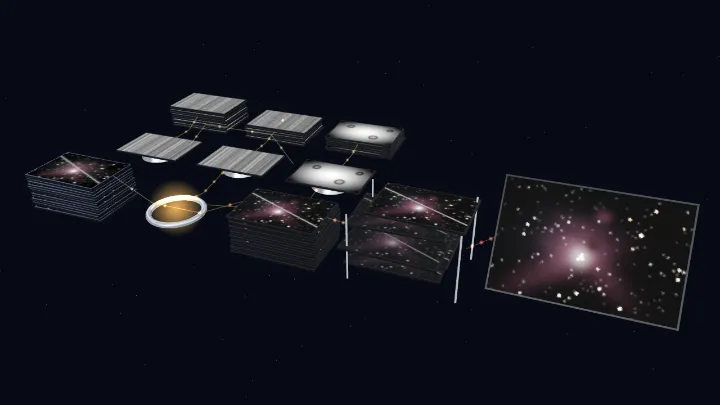
Astrophoto · PrétraitementChaîne de traitement
Des poses brutes à l'image empilée : ce que corrigent les offsets, les darks et les flats, et ce qu'apportent l'alignement, le dithering et l'empilement. Caméra refroidie ou APN.
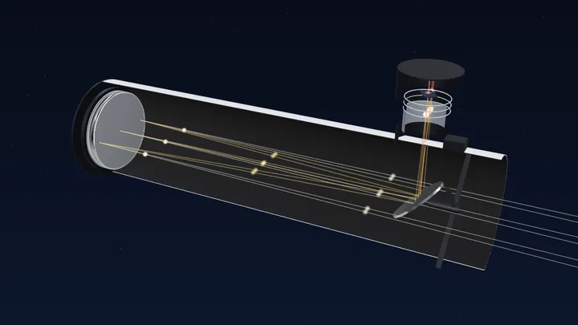
Instruments · AstrophotoNewton et correcteur de coma
Pourquoi les étoiles des coins prennent une forme de comète sur un Newton ouvert, et comment le correcteur de coma les arrondit, à condition de respecter le tirage.
Le ciel et ses phénomènes
La mécanique céleste en mouvement : la rotation du ciel étoilé, la course du Soleil et les saisons, la Lune, les éclipses et la course des planètes.
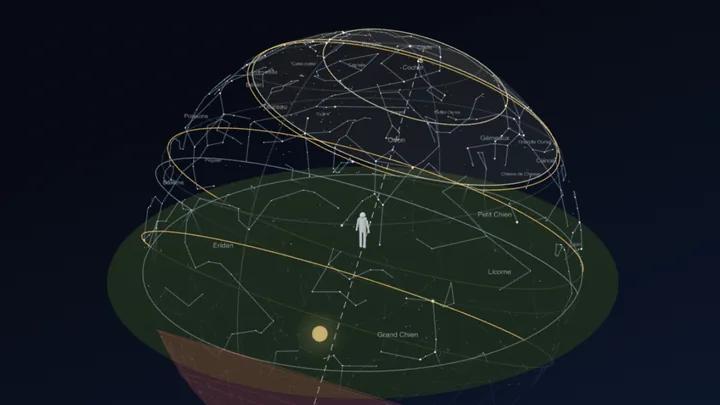
Ciel · ÉtoilesMouvement apparent des étoiles
Le ciel tourne autour de la Polaire : étoiles circumpolaires, levées et couchées ou jamais visibles selon la latitude, et constellations qui changent avec les saisons, sur la vraie carte du ciel.
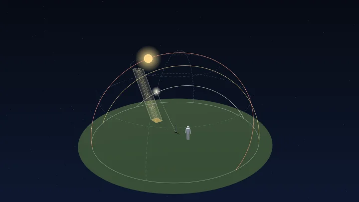
Ciel · SoleilSaisons et trajectoire du Soleil
La course du Soleil dans le ciel selon la date et la latitude : hauteur à midi, durée du jour, ombre d'un bâton et lumière reçue par le sol. Ce n'est pas la distance qui fait les saisons.
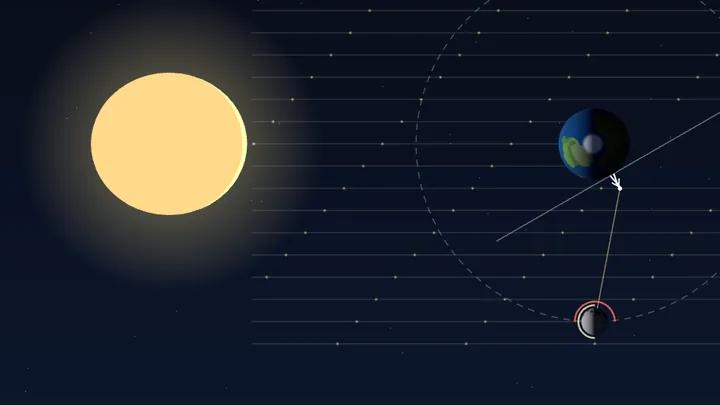
Mécanique céleste · LunePhases de la Lune
Soleil, Terre et Lune vus de dessus : déplacez la Lune sur son orbite, faites tourner la Terre et voyez la Lune comme l'observateur, avec le vocabulaire des phases.
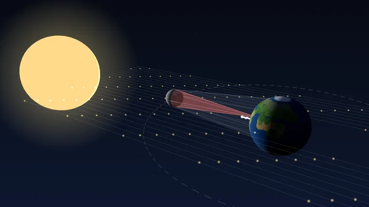
Mécanique céleste · ÉclipsesÉclipse de Soleil
L'ombre de la Lune sur la Terre : éclipses partielle, totale et annulaire, avec la couronne solaire et les grains de Baily vus par l'observateur.
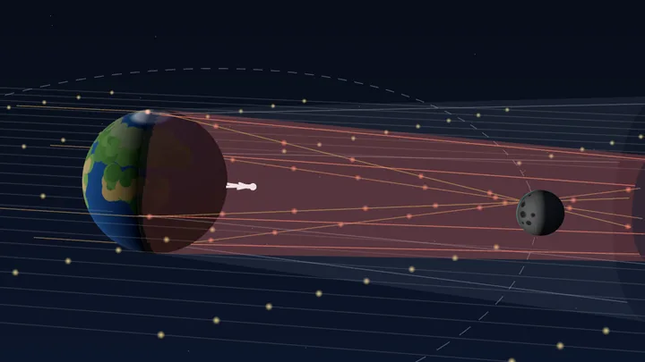
Mécanique céleste · ÉclipsesÉclipse de Lune
La Lune traverse l'ombre de la Terre : éclipses pénombrale, partielle et totale, et la teinte cuivrée donnée par l'atmosphère terrestre.
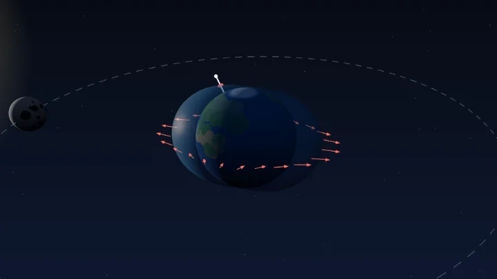
Mécanique céleste · Terre et LuneMarées
La Lune et le Soleil étirent les océans en deux bourrelets sous lesquels tourne la Terre : marée toutes les 12 h 25, vives-eaux et mortes-eaux, la mer qui monte et descend à Brest.
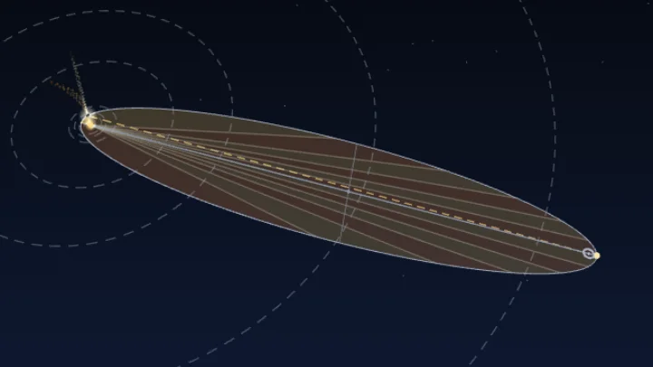
Mécanique céleste · OrbitesLois de Kepler
Pourquoi la comète de Halley file près du Soleil puis se traîne pendant des décennies : orbite elliptique, aires balayées en des durées égales et T² = a³, avec la Terre, Mars et Halley.
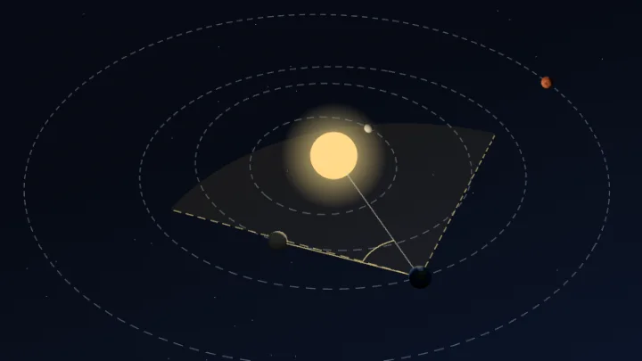
Mécanique céleste · PlanètesÉlongation et opposition
Pourquoi Mercure et Vénus ne s'écartent jamais beaucoup du Soleil, alors que Mars peut briller toute la nuit : élongations de Vénus en 2026-2027 et opposition de Mars du 19 février 2027.
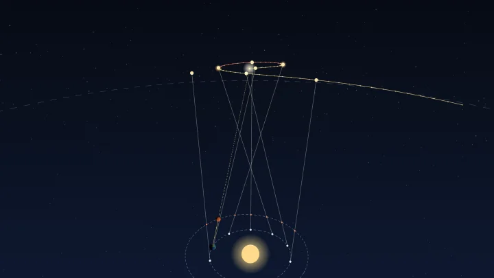
Mécanique céleste · PlanètesRétrogradation des planètes
Quand la Terre double Mars, Mars semble reculer devant les étoiles : lignes de visée, boucle de l'opposition de janvier 2025 et vraie trajectoire vue de la Terre.